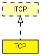

The TCPNewReno, TCPReno and TCPTahoe algorithms implement:
Missing bits:
TCPNewReno/TCPReno/TCPTahoe issues and missing features:
The above problems are relatively easy to fix, and will be resolved in the next iteration. Also, other TCPAlgorithms will be added.
Tests
There are automated test cases (*.test files) for TCP -- see the Test directory in the source distribution.
Please also see ChangeLog.
The following diagram shows usage relationships between types. Unresolved types are missing from the diagram. Click here to see the full picture.
The following diagram shows inheritance relationships for this type. Unresolved types are missing from the diagram. Click here to see the full picture.
If a module type shows up more than once, that means it has been defined in more than one NED file.
| LDP_LSR (compound module) |
An LDP-capable router. |
| MFMobileHost (compound module) |
Models a mobile host with a wireless (802.11b) card in ad-hoc mode. This model contains the Mobility Framework's 802.11 implementation, Nic80211, and IP, TCP and UDP protocols. The mobility model can be dynamically specified with the mobilityType parameter. |
| MobileHost (compound module) |
Models a mobile host with a wireless (802.11b) card in ad-hoc mode. This model contains the new IEEE 802.11 implementation, Ieee80211Nic, and IP, TCP and UDP protocols. The mobility model can be dynamically specified with the mobilityType parameter. |
| MyHost (compound module) | (no description) |
| WirelessHost (compound module) |
Models a host with one wireless (802.11b) card in infrastructure mode. This module is basically a StandardHost with an Ieee80211NicSTA added. It should be used in conjunction with WirelessAP, or any other AP model which contains Ieee80211NicAP. |
| WirelessHostSimplified (compound module) |
Models a host with one wireless (802.11b) card in infrastructure mode, but using a simplified NIC that does not support handovers. This module is basically a StandardHost with an Ieee80211NicSTASimplified added. It should be used in conjunction with WirelessAPSimplified, or any other AP model which contains Ieee80211NicAPSimplified. |
| Name | Type | Default value | Description |
|---|---|---|---|
| advertisedWindow | int | 14*this.mss |
in bytes, corresponds with the maximal receiver buffer capacity (Note: normally, NIC queues should be at least this size) |
| delayedAcksEnabled | bool | false |
delayed ACKs enabled/disabled |
| nagleEnabled | bool | true |
Nagle's algorithm (RFC 896) enabled/disabled |
| limitedTransmitEnabled | bool | false |
Limited Transmit algorithm (RFC 3042) enabled/disabled (can be used for TCPReno/TCPTahoe/TCPNewReno/TCPNoCongestionControl) |
| increasedIWEnabled | bool | false |
Increased Initial Window (RFC 3390) enabled/disabled |
| sackSupport | bool | false |
Selective Acknowledgment (RFC 2018, 2883, 3517) support (header option) (SACK will be enabled for a connection if both endpoints support it) |
| mss | int | 536 |
maximum segment size (header option) |
| tcpAlgorithmClass | string | "TCPReno" |
TCPReno/TCPTahoe/TCPNewReno/TCPNoCongestionControl/DumbTCP |
| sendQueueClass | string | "TCPVirtualDataSendQueue" |
TCPVirtualDataSendQueue/TCPMsgBasedSendQueue |
| receiveQueueClass | string | "TCPVirtualDataRcvQueue" |
TCPVirtualDataRcvQueue/TCPMsgBasedRcvQueue |
| recordStats | bool | true |
recording of seqNum etc. into output vectors enabled/disabled |
| Name | Value | Description |
|---|---|---|
| display | i=block/wheelbarrow |
| Name | Direction | Size | Description |
|---|---|---|---|
| appIn [ ] | input | ||
| ipIn | input | ||
| ipv6In | input | ||
| appOut [ ] | output | ||
| ipOut | output | ||
| ipv6Out | output |
// The TCPNewReno, TCPReno and TCPTahoe algorithms implement: // - delayed acks, with 200ms timeout (optional) // - RFC 896 - Nagle's algorithm (optional) // - Jacobson's and Karn's algorithms for round-trip time measurement and // adaptive retransmission // - \TCPTahoe (Fast Retransmit), \TCPReno (Fast Retransmit and Fast Recovery), \TCPNewReno (Fast Retransmit and Fast Recovery) // - RFC 3390 - Increased Initial Window (optional) integrated to TCPBaseAlg // (can be used for TCPNewReno, TCPReno, TCPTahoe and TCPNoCongestionControl but not // for DumbTCP). // - RFC 3042 - Limited Transmit algorithm (optional) integrated to TCPBaseAlg // (can be used for TCPNewReno, TCPReno, TCPTahoe and TCPNoCongestionControl but not // for DumbTCP). // // Missing bits: // - URG and PSH bits not handled. Receiver always acts as if PSH was set // on all segments: always forwards data to the app as soon as possible. // - no RECEIVE command. Received data are always forwarded to the app as // soon as possible, as if the app issued a very large RECEIVE request // at the beginning. This means there's currently no flow control // between TCP and the app. // - all timeouts are precisely calculated: timer granularity (which is caused // by "slow" and "fast" i.e. 500ms and 200ms timers found in many *nix \TCP // implementations) is not simulated // - new ECN flags (CWR and ECE). Need to be added to header by [RFC 3168]. // - Re-starting Idle Connections (RFC 2581) // RFC 2581, pages 7 and 8: "When TCP has not received a segment for // more than one retransmission timeout, cwnd is reduced to the value // of the restart window (RW) before transmission begins. // For the purposes of this standard, we define RW = IW." // // TCPNewReno/TCPReno/TCPTahoe issues and missing features: // - KEEP-ALIVE not implemented (idle connections never time out) // - Nagle's algorithm (RFC 896) possibly not precisely implemented // - Re-starting Idle Connections (RFC 2581) // RFC 2581, pages 7 and 8: "When TCP has not received a segment for // more than one retransmission timeout, cwnd is reduced to the value // of the restart window (RW) before transmission begins. // For the purposes of this standard, we define RW = IW." // // The above problems are relatively easy to fix, and will be resolved in the // next iteration. Also, other TCPAlgorithms will be added. // // <b>Tests</b> // // There are automated test cases (*.test files) for TCP -- see the Test // directory in the source distribution. // // Please also see ChangeLog. // simple TCP like ITCP { parameters: int advertisedWindow = default(14*this.mss); // in bytes, corresponds with the maximal receiver buffer capacity (Note: normally, NIC queues should be at least this size) bool delayedAcksEnabled = default(false); // delayed ACKs enabled/disabled bool nagleEnabled = default(true); // Nagle's algorithm (RFC 896) enabled/disabled bool limitedTransmitEnabled = default(false); // Limited Transmit algorithm (RFC 3042) enabled/disabled (can be used for TCPReno/TCPTahoe/TCPNewReno/TCPNoCongestionControl) bool increasedIWEnabled = default(false); // Increased Initial Window (RFC 3390) enabled/disabled bool sackSupport = default(false); // Selective Acknowledgment (RFC 2018, 2883, 3517) support (header option) (SACK will be enabled for a connection if both endpoints support it) int mss = default(536); // maximum segment size (header option) string tcpAlgorithmClass = default("TCPReno"); // TCPReno/TCPTahoe/TCPNewReno/TCPNoCongestionControl/DumbTCP string sendQueueClass = default("TCPVirtualDataSendQueue"); // TCPVirtualDataSendQueue/TCPMsgBasedSendQueue string receiveQueueClass = default("TCPVirtualDataRcvQueue"); // TCPVirtualDataRcvQueue/TCPMsgBasedRcvQueue bool recordStats = default(true); // recording of seqNum etc. into output vectors enabled/disabled @display("i=block/wheelbarrow"); gates: input appIn[] @labels(TCPCommand/down); input ipIn @labels(TCPSegment,IPControlInfo/up); input ipv6In @labels(TCPSegment,IPv6ControlInfo/up); output appOut[] @labels(TCPCommand/up); output ipOut @labels(TCPSegment,IPControlInfo/down); output ipv6Out @labels(TCPSegment,IPv6ControlInfo/down); }